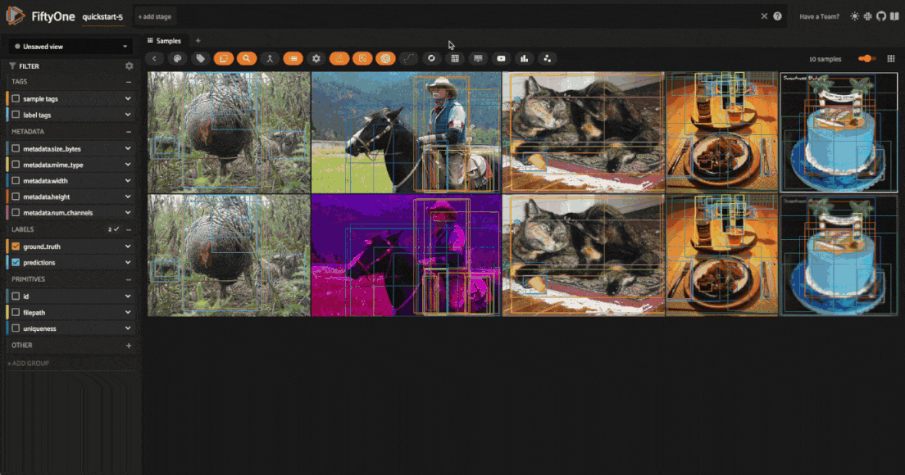
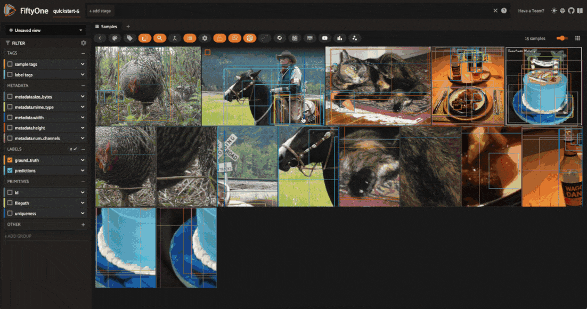

Albumentations Integration ¶¶
The Albumentations library is the leading open-source library for image augmentation in machine learning. It is widely used in the computer vision community and is known for its extensive collection of augmentations and its high performance.
Now, we’ve integrated Albumentations transformation pipelines directly with FiftyOne datasets, enabling you to visualize Albumentations augmentations and test their effects on your data directly within the FiftyOne App!
This integration takes the form of a FiftyOne plugin, which is easy to install and can be used entirely via a convenient graphical interface.
With the FiftyOne Albumentations plugin, you can transform any and all labels
of type Detections, Keypoints, Segmentation, and Heatmap, or just
the images themselves.
This integration guide will focus on the setup process and the functionality of the plugin. For a tutorial on how to curate your augmentations, check out the Data Augmentation Tutorial.
Overview ¶¶
Before we get started, let’s take a look at the main features of the FiftyOne Albumentations integration.
Supported transformations ¶¶
Albumentations supports 80+ transformations, spanning pixel-level transformations, geometric transformations, and more.
The FiftyOne Albumentations plugin currently supports all but the following transformations:
Functionality ¶¶
The FiftyOne Albumentations plugin provides the following functionality:
-
Apply Albumentations transformations to your dataset, your current view, or selected samples
-
Visualize the effects of these transformations directly within the FiftyOne App
-
View samples generated by the last applied transformation
-
Save augmented samples to the dataset
-
Get info about the last applied transformation
-
Save transformation pipelines to the dataset for reproducibility
Setup ¶¶
To get started, first make sure you have FiftyOne and Albumentations installed:
$ pip install -U fiftyone albumentations
Next, install the FiftyOne Albumentations plugin:
$ fiftyone plugins download https://github.com/jacobmarks/fiftyone-albumentations-plugin
Note
If you have the
FiftyOne Plugin Utils plugin
installed, you can also install the Albumentations plugin via the install_plugin
operator, selecting the Albumentations plugin from the community dropdown menu.
You will also need to load (and download if necessary) a dataset to apply the augmentations to. For this guide, we’ll use the quickstart dataset:
import fiftyone as fo
import fiftyone.zoo as foz
## only take 5 samples for quick demonstration
dataset = foz.load_zoo_dataset("quickstart", max_samples=5)
# only keep the ground truth labels
dataset.select_fields("ground_truth").keep_fields()
session = fo.launch_app(dataset)
Note
The quickstart dataset only contains Detections labels. If you want to test
Albumentations transformations on other label types, here are some quick
examples to get you started, using FiftyOne’s
Hugging Face Transformers and
Ultralytics integrations:
pip install -U transformers ultralytics
import fiftyone as fo
import fiftyone.zoo as foz
from ultralytics import YOLO
# Keypoints
model = YOLO("yolov8l-pose.pt")
dataset.apply_model(model, label_field="keypoints")
# Instance Segmentation
model = YOLO("yolov8l-seg.pt")
dataset.apply_model(model, label_field="instances")
# Semantic Segmentation
model = foz.load_zoo_model(
"segmentation-transformer-torch",
name_or_path="Intel/dpt-large-ade",
)
dataset.apply_model(model, label_field="mask")
# Heatmap
model = foz.load_zoo_model(
"depth-estimation-transformer-torch",
name_or_path="LiheYoung/depth-anything-small-hf",
)
dataset.apply_model(model, label_field="depth_map")
Apply transformations ¶¶
To apply Albumentations transformations to your dataset, you can use the
augment_with_albumentations
operator. Press the backtick key (‘`’) to open the operator modal, and select
the augment_with_albumentations operator from the dropdown menu.
You can then configure the transformations to apply:
-
Number of augmentations per sample: The number of augmented samples to generate for each input sample. The default is 1, which is sufficient for deterministic transformations, but for probabilistic transformations, you may want to generate multiple samples to see the range of possible outputs.
-
Number of transforms: The number of transformations to compose into the pipeline to be applied to each sample. The default is 1, but you can set this as high as you’d like — the more transformations, the more complex the augmentations will be. You will be able to configure each transform separately.
-
Target view: The view to which the transformations will be applied. The default is
dataset, but you can also apply the transformations to the current view or to currently selected samples within the app. -
Execution mode: If you set
delegated=False, the operation will be executed immediately. If you setdelegated=True, the operation will be queued as a job, which you can then run in the background from your terminal with:
$ fiftyone delegated launch
For each transformation, you can select either a “primitive” transformation from the Albumentations library, or a “saved” transformation pipeline that you have previously saved to the dataset. These saved pipelines can consist of one or more transformations.
When you apply a primitive transformation, you can configure the parameters of the transformation directly within the app. The available parameters, their default values, types, and docstrings are all integrated directly from the Albumentations library.
When you apply a saved pipeline, there will not be any parameters to configure.

Visualize transformations ¶¶
Once you’ve applied the transformations, you can visualize the effects of the
transformations directly within the FiftyOne App. All augmented samples will be
added to the dataset, and will be tagged as augmented so that you can easily
filter for just augmented or non-augmented samples in the app.

You can also filter for augmented samples programmatically with the
match_tags() method:
# get just the augmented samples
augmented_view = dataset.match_tags("augmented")
# get just the non-augmented samples
non_augmented_view = dataset.match_tags("augmented", bool=False)
However, matching on these tags will return all samples that have been generated by an augmentation, not just the samples that were generated by the last applied transformation — as you will see shortly, we can save augmentations to the dataset. To get just the samples generated by the last applied transformation, you can use the view_last_albumentations_run operator:

Note
For all samples added to the dataset by the FiftyOne Albumentations plugin,
there will be a field "transform", which contains the information not just
about the pipeline that was applied, but also about the specific parameters
that were used for this application of the pipeline. For example, if you
had a HorizontalFlip transformation with an application probability of
p=0.5, the contents of the "transform" field tell you whether or not
this transformation was applied to the sample!
Save augmentations ¶¶
By default all augmentations are temporary, as the FiftyOne Albumentations plugin is primarily designed for rapid prototyping and experimentation. This means that when you generated a new batch of augmented samples, the previous batch of augmented samples will be removed from the dataset, and the image files will be deleted from disk.
However, if you want to save the augmented samples to the dataset, you can use
the save_albumentations_augmentations
operator, which will save the augmented samples to the dataset while keeping
the augmented tag on the samples.

Get last transformation info ¶¶
When you apply a transformation pipeline to samples in your dataset using the FiftyOne Albumentations plugin, this information is captured and stored using FiftyOne’s custom runs. This means that you can easily access the information about the last applied transformation.
In the FiftyOne App, you can use the get_last_albumentations_run_info operator to display a formatted summary of the relevant information:

Note
You can also access this information programmatically by getting info about
the custom run that the information is stored in. For the Albumentations
plugin, this info is stored via the key '_last_albumentations_run':
last_run_info = dataset.get_run_info("_last_albumentations_run")
print(last_run_info)
Save transformations ¶¶
If you are satisfied with the transformation pipeline you have created, you can save the entire composition of transformations to the dataset, hyperparameters and all. This means that after your rapid prototyping phase, you can easily move to a more reproducible workflow, and you can share your transformations or port them to other datasets.
To save a transformation pipeline, you can use the save_albumentations_transform operator:
After doing so, you will be able to view the information about this saved transformation pipeline using the get_albumentations_run_info operator:

Additionally, you will have access to this saved transformation pipeline under the “saved” tab for each transformation in the augment_with_albumentations operator modal.